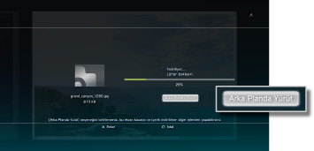
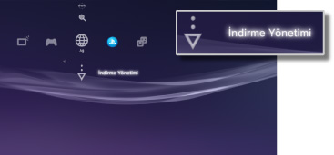

Ağ > Arka Planda İndirme
Arka Planda İndirme
Arka planda indirme, birden fazla veri öğesi veya büyük dosya boyutunda veriler indirirken diğer işlemleri gerçekleştirmenizi sağlayan bir özelliktir. Bu özellik yalnızca içerik indirirken ekranda [Arka Planda Yürüt] seçeneği görüntülenirken kullanılabilir.

İpuçları
- Veri türüne veya indirilmekte olan veri öğelerinin sayısına bağlı olarak arka planda indirmeyi gerçekleştiremeyebilirsiniz.
- Oyunlar veya video dosyaları gibi indirilen verileri kullanmak için yükleme gerekmeyebilir. İndirme bittiğinde, yükleme gerektiren veriler her kategoride
 veya
veya  olarak görüntülenir.
olarak görüntülenir. - Sistem depolama alanında yüklenmiş veriler varken arka planda indirme kullanılamayabilir.
- Arka planda indirme sırasında PS3™ sistemi kapalıysa, indirme durumu kaydedilir. PS3™ sistemi bir sonraki açılışında ve Internet'e bağlanıldığında indirme otomatik olarak yeniden başlatılır.
- Aşağıdaki işlemler gerçekleştirilirken arka planda indirme geçici olarak durdurulur. İşlem tamamlandığında indirme otomatik olarak yeniden başlatılacaktır.
- - Blu-ray Disc veya DVD oynatırken
- - Çevrimiçi oyunların * ağ özellikleri kullanılırken
- - PlayStation®2 formatındaki yazılım başlatılırken
- - Sesli / görüntülü sohbet kullanılırken
- - Bir sistem güncellemesi gerçekleştirilirken
- -
 (Ayarlar) altında ayar öğeleri ayarlanırken
(Ayarlar) altında ayar öğeleri ayarlanırken
*
Oyun sonlanma sürecindeyken, arka planda indirme geçici olarak durdurulacaktır.
Uyarılar
- Bazı PlayStation®2 veya PlayStation® formatındaki yazılım başlıkları PS3™ sisteminde PlayStation®2 veya PlayStation® sistemlerinde çalıştıklarından farklı çalışabilir veya PS3™ sisteminde düzgün çalışmayabilir.
- PlayStation®2 formatındaki diskler bazı PS3™ sistemlerinde oynatılamayabilir. Ayrıntılar için, [Oynatılabilir Disk Türleri] konusuna bakın, bölgeniz için olan SIE Web sitesini ziyaret edin veya PS3™ sisteminizle verilen belgeleri inceleyin.
İndirme Yönetimi
Bu seçenek yalnızca bir arka plan indirme gerçekleştirilirken görüntülenir. İndirme durumunu kontrol edebilir veya  (İnternet Tarayıcısı) veya
(İnternet Tarayıcısı) veya  (PlayStation®Store) konumundan indirilmekte olan veriyi indirmeyi iptal edebilirsiniz.
(PlayStation®Store) konumundan indirilmekte olan veriyi indirmeyi iptal edebilirsiniz.  (Ağ) altında
(Ağ) altında  (İndirme Yönetimi) öğesini seçin.
(İndirme Yönetimi) öğesini seçin.

İndirme durumunu kontrol etme
İndirme durumunu kontrol etmek istediğiniz verinin simgesini seçin,  düğmesine basın ve sonra seçenekler menüsünden [Durum] öğesini seçin.
düğmesine basın ve sonra seçenekler menüsünden [Durum] öğesini seçin.
İndirmeyi iptal etme
İndirme işlemini iptal etmek istediğiniz verinin simgesini seçin, düğmesine basın ve sonra seçenekler menüsünden [İptal] öğesini seçin. İndirme iptal edildikten sonra, (İndirme Yönetimi) içinden temizlenir.
İndirmeleri duraklatma / sürdürme
İndirme işlemini duraklatmak istediğiniz verinin simgesini seçin, düğmesine basın ve sonra seçenekler menüsünden [Duraklat] öğesini seçin. İndirmeyi sürdürmek için, düğmesine tekrar basın ve sonra seçenekler menüsünden [Sürdür] öğesini seçin.
İpuçları
- İndirmeyi duraklatmak için, simgeyle
 görüntülenecektir.
görüntülenecektir. - Birden fazla veri öğesini indirirken bir indirmeyi duraklatırsanız, sonraki veri öğesi otomatik olarak indirilmeye başlar.
Tüm indirmeleri duraklatma
Herhangi bir indirmenin simgesini seçin, düğmesine basın ve sonra seçenekler menüsünden [Tümünü Duraklat] öğesini seçin.
Tüm indirmeleri sürdürme
Herhangi bir indirmenin simgesini seçin, düğmesine basın ve sonra seçenekler menüsünden [Tümünü Sürdür] öğesini seçin.